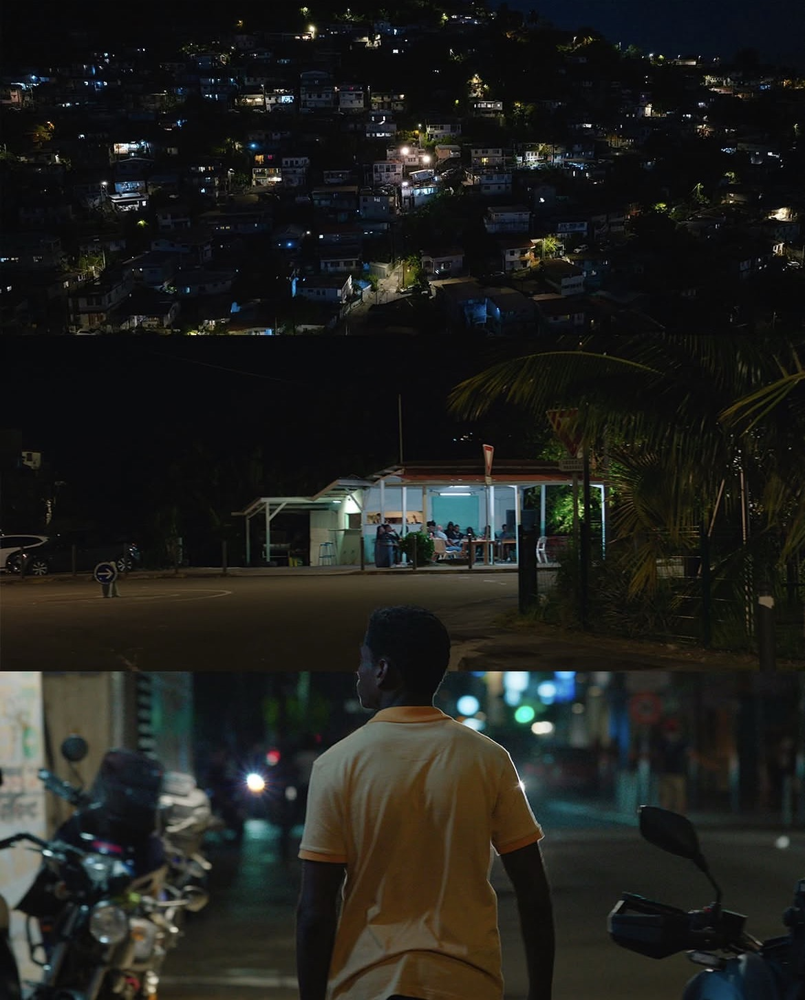
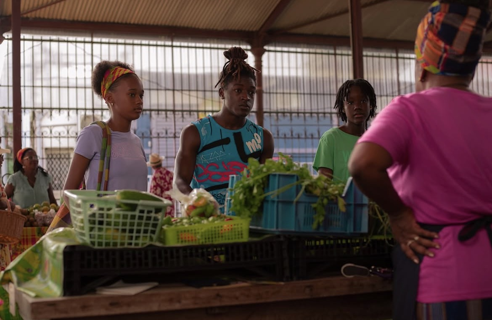

— pts de popularité — · N°1 dans — pays · — top 10 nationaux
Source : flixpatrol.com · MAJ —
Évolution depuis la sortie
Score de popularité & nombre de pays N°1 · Source FlixPatrol
Faits marquants
-
#1 en Martinique dès J1 Jamais détrônée depuis la sortie
-
Percée inattendue en Hongrie De #10 à #1 en 4 jours
-
Entrée aux États-Unis #10 le 12/04, percée du marché US
-
Progression record +226 points en 3 jours (+108%)
-
Domination Caraïbes #1 dans 7 pays de la région
🇲🇶 Rang Martinique jour par jour
Classement quotidien dans le top 10 Netflix · axe inversé (1 = N°1)
Forecast Saison 2
Méthodologie : modèle probabiliste basé sur l'historique des renouvellements Netflix de séries non-anglophones ayant atteint le top 10 mondial dès la S1.

Notes & avis du public
8 sources · mise à jour toutes les 6hFraîcheur des données
8 tables · scraping automatiqueScrapers
5 workflows GitHub Actions · cliquez pour voir les logs— pays
Trié par rangBuzz & Veille
Presse mondiale + réseaux sociaux · Tout ce qui parle de Bandi
Top 10 TV Shows Netflix · Monde
Position de Bandi face aux autres séries du classement mondial
Bandi se classe #6 mondial, à 38 pts de The Cleaning Lady (#5) et 133 pts devant Detective Hole (#7). Progression quotidienne +67% vs hier.
Source : flixpatrol.com/top10/netflix/world · classement TV Shows quotidien
Score & Rang · 30 derniers jours
Évolution quotidienne · Source FlixPatrol
Performance par pays
Rang actuel vs moyenne semaine précédente · δ positif = progression
Présence mondiale de Bandi
Carte choroplèthe · Cliquer sur un pays pour les détails
BANDI
Par Éric Rochant & Capucine Rochant
Synopsis
À la suite de la mort de leur mère, leur pilier et leur repère, onze frères et sœurs âgés de 7 à 23 ans luttent pour rester unis face à l'adversité. Pour certains d'entre eux, le trafic de drogue semble être la seule issue. Une décision loin de faire l'unanimité, qui met à rude épreuve la solidité des liens familiaux.
« Bandi » en créole martiniquais signifie bandit, voleur, malfaiteur. Première série Netflix intégralement tournée en Martinique, dans les quartiers de Trenelle, Dillon et Volga-Plage.
Bandi en chiffres
Diffusion mondiale · Production en MartiniqueUn projet de grande ampleur
Une série pensée pour circuler largement
La production en chiffres
110 techniciens mobilisés par jour en moyenne
dont 107 en Martinique
dont 75 joués par des talents locaux
Source : @yoottle · Martinique, French Caribbean
Indice d'Authenticité Martiniquaise
Une production qui privilégie les talents antillais et créoles authentiques.
Indicateur clé pour dossiers CNC, festivals, subventions Région Martinique.
Source : production Maui Entertainment · casting interne · À valider par la production avant toute présentation officielle

Équipe créative
Éric Rochant & Capucine Rochant
Jimmy Laporal-Trésor · Mathilde Vallet
Maui Entertainment · Netflix France